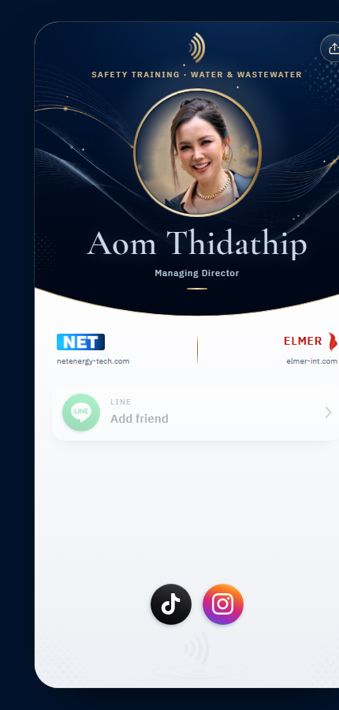
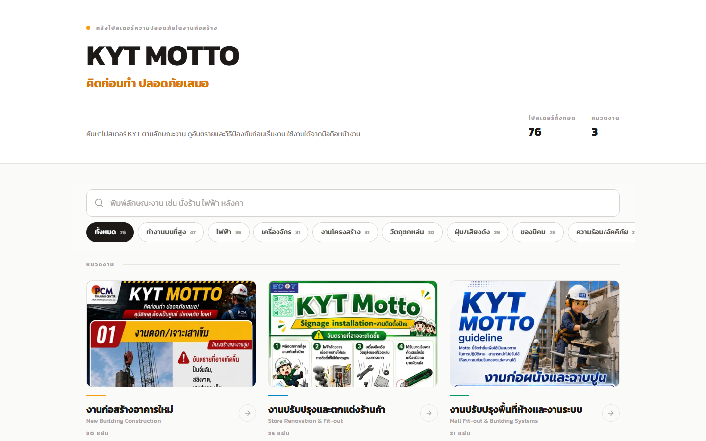
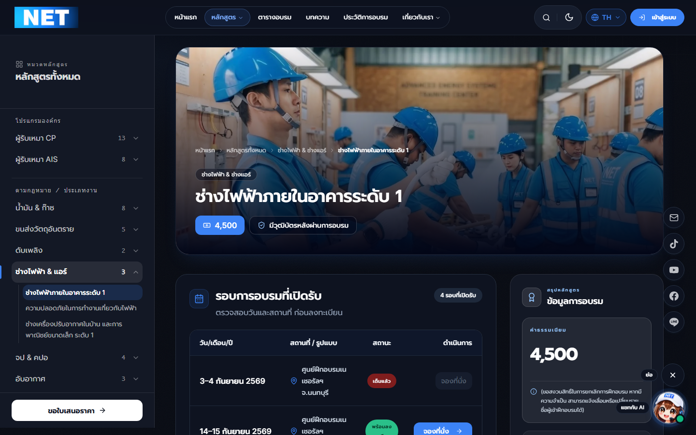
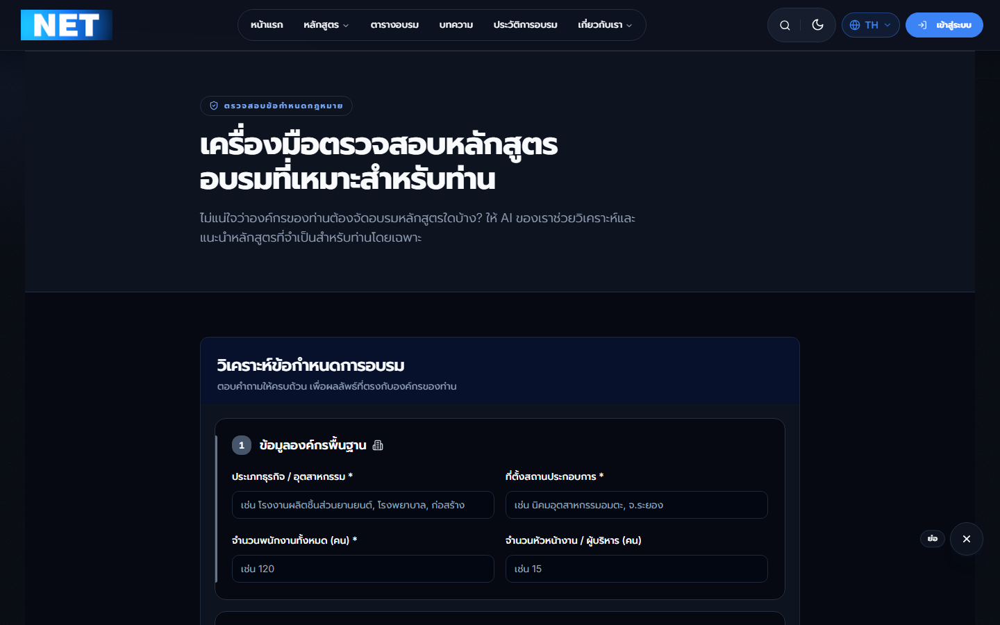

รอบนี้เป็นรอบขยายพอร์ต — เปิดระบบใหม่ 4 ระบบ (2 ระบบให้ธุรกิจในเครือ ELMER) พร้อมทำให้ระบบหลักขายได้จริงมากขึ้น ทั้งใบประกาศ E-Learning และเว็บไซต์ · รวม 175 งานพัฒนา ใน 9 โปรเจกต์
ลงทะเบียน ส.ค. 798 ใบ (ยืนยัน 645 · ยกเลิก 101 · รอ 52) ต่ำกว่า ก.ค. ~12% แต่ผู้ผ่านการอบรมยังทรงตัวที่ ~1,150–1,200 คน/เดือน ตลอด 4 เดือน

แตะบัตร NFC แล้วเปิดหน้านามบัตรของกรรมการผู้จัดการได้ทันที — หน้าเดียวครอบทั้ง NET และ ELMER พร้อมปุ่ม LINE · โทร · อีเมล · TikTok · Instagram · แชร์

ค้นหาโปสเตอร์ตามลักษณะงาน (นั่งร้าน ไฟฟ้า หลังคา) แม้พิมพ์ผิดหรือย่อคำ — วัดกับ 105 คำค้นจริง: เจอคำแรก 100/105 (จาก 62) โดยไม่ต้องเรียก AI ตอนค้น · AI อ่านโปสเตอร์ให้ครั้งเดียวตอนนำเข้า


คนที่มาจาก ChatGPT + Gemini รวม 89 ครั้งในเดือน ส.ค. (ก.ค. 100) — ยังเล็กแต่มาสม่ำเสมอทุกเดือน · Direct ยังเป็นก้อนใหญ่สุด (60%) = คนที่รู้จักเราอยู่แล้ว เปิดจากบุ๊กมาร์ก/แอป · Google ยังเป็นช่องทางที่พาคนใหม่มามากที่สุด 11,040 ครั้ง (+5%)
มีคำถามหรืออยากดูตัวเลขไหนเจาะลึก บอกได้เลยครับ — ทุกตัวเลขในชุดนี้ดึงจากระบบจริงและมีตารางประกอบ (กดปุ่ม "ตาราง" บนกราฟ)